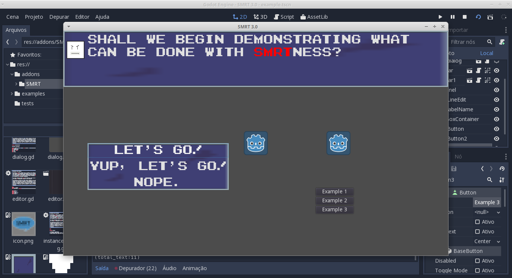

SMRT-Godot Legacy and the future of SMRT
SMRT-Godot is a plugin I made to create dialogs for my game (which has
still to come to life), over the course of almost two years now, I've
been supporting it
Godot community has grown a lot over the time I've been working on this
little plugin, and I am happy to say that there are a lot of capable
users that can do and will do their own sollutions, be it based in past
works like mine, other friends' or even build something from scratch
(which is really cool, you learn a lot).
Well, I'm posting to announce that, the last update for SMRT-Godot for
the 2.x branch has been out for quite some time, but I had yet to port
it to godot 3.0. This is finally happening. YAY!
As of now I have the complete dialog system working in godot 3, with
just some few things to iron out, mostly related to the new sound engine
which I have still to get a hang of. I have been out of game dev for
quite some time now thanks to personal matters and the time I have to
work on games is getting shorter and shorter.
|  |
| It is ALIIIIIIVE! |
{kind=link}
There is also the editor, which I will have to completely rewrite, both its GUI and code.
While no more updates will be made for the tool, it is fairly stable and you should have no problems using it in the now legacy 2.1 version of godot.
That's it, stay tunned for updates into my game, probably on twitter at @brunosxs